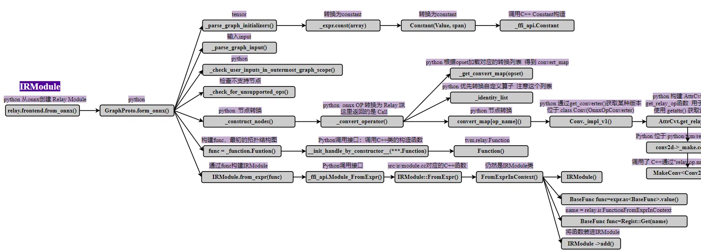
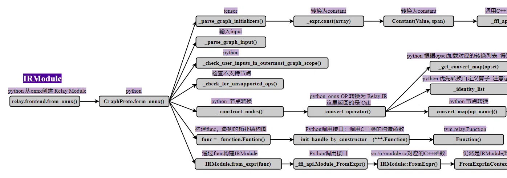
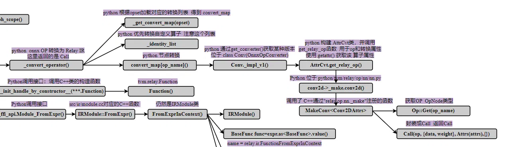
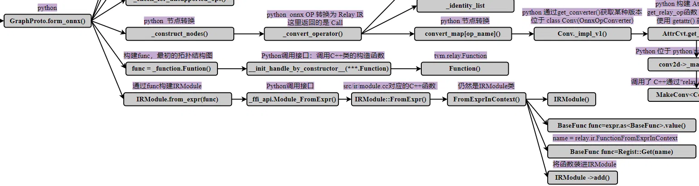

# 前言
本系列文章将从代码和流程图入手，详细介绍 TVM AI 编译器的编译流程。本文章为第二篇，对应的 TVM 版本为当前最新版本 1.7。
网络上有不少 TVM 工程的教程资源，如果本博客也是其他教程的简单重复的话，则网络的角落里又多了一份纯粹的空间占用者。所以我在想，本文章有什么特点才值得一看呢？我觉得有两个优点: 1、本文从代码出发，不会泛泛而谈，能够从细节了解 TVM；2、自认为结构流程图画的不错，能够从整体上把握 TVM 的脉络。所以，也许值得一看呢。
本篇文章以 onnx 为例，介绍主流模型转换为 TVM 高级中间表示 Relay IR 的过程。
作为初学者，错误在所难免，还望不吝赐教。
# Onnx 结构
先来了解一下 onnx 模型的结构信息：下图是一个简单的 onnx 模型的结构（只选取了代表性的一部分）
全局信息： 版本信息： ir_version: 7 ； 来源： producer_name: "pytorch" 来源版本 ： producer_version: "2.1.0"
图信息：包含在 graph 字段中。
- 节点信息 node：指明输入 input 输出 output 张量，本身的名字 name，节点类型 type，参数信息 attribute
- 张量信息 initializer：维度 dims，类型信息 data_type，名字 name，具体数值 raw_data。
- 输入张量 input
- 输出张量 output
ir_version: 7 | |
producer_name: "pytorch" | |
producer_version: "2.1.0" | |
graph { | |
node { | |
input: "start" | |
input: "onnx::Conv_28" # kernal | |
input: "onnx::Conv_29" # bias | |
output: "/conv1/Conv_output_0" | |
name: "/conv1/Conv" | |
op_type: "Conv" | |
attribute { | |
name: "dilations" | |
ints: 1 | |
ints: 1 | |
type: INTS | |
} | |
attribute { | |
name: "group" | |
i: 1 | |
type: INT | |
} | |
attribute { | |
name: "kernel_shape" | |
ints: 3 | |
ints: 3 | |
type: INTS | |
} | |
attribute { | |
name: "pads" | |
ints: 0 | |
ints: 0 | |
ints: 0 | |
ints: 0 | |
type: INTS | |
} | |
} | |
node { | |
input: "/conv1/Conv_output_0" | |
output: "/relu1/Relu_output_0" | |
name: "/relu1/Relu" | |
op_type: "Relu" | |
} | |
initializer { | |
dims: 2 | |
dims: 8 | |
data_type: 1 | |
name: "fc.weight" | |
raw_data: "]&\212>`\201\213\274@\227\224\275\274\331p\276b@N>\017\305\223>&&\263\276(UD=\300\257q\275\320\231\246\275\320\341\276=\372\273}>C\226\236> e)\275\357\222\236>\212\\8>" | |
} | |
initializer { | |
dims: 2 | |
data_type: 1 | |
name: "fc.bias" | |
raw_data: "\3451\232\276\200\247(=" | |
} | |
input { | |
name: "start" | |
type { | |
tensor_type { | |
elem_type: 1 | |
shape { | |
dim { | |
dim_value: 5 | |
} | |
dim { | |
dim_value: 3 | |
} | |
dim { | |
dim_value: 16 | |
} | |
dim { | |
dim_value: 16 | |
} | |
} | |
} | |
} | |
} | |
output { | |
name: "end" | |
type { | |
tensor_type { | |
elem_type: 1 | |
shape { | |
dim { | |
dim_value: 5 | |
} | |
dim { | |
dim_value: 2 | |
} | |
} | |
} | |
} | |
} | |
} | |
opset_import { | |
version: 12 | |
} |
# Python 脚本
这里提供一个简单的 Python 脚本，调用 TVM Python 前端，实现 onnx 模型的编译过程。tvm 通过代码学习编程流程系列文章将基本采用这个脚本帮助追踪代码。
import onnx | |
from PIL import Image | |
import numpy as np | |
import tvm.relay as relay | |
import tvm | |
from tvm.contrib import graph_executor | |
###################################### 路径信息 ########################################## | |
model_path = "/home/xianmu/module/resnet18.onnx" | |
save_path = "/home/xianmu/module/pythonSave/" | |
onnx_model = onnx.load(model_path) | |
################################## 图片信息 ############################################## | |
img_path = "/home/xianmu/.tvm_test_data/data/imagenet_cat.png" | |
# Resize it to 224x224 | |
resized_image = Image.open(img_path).resize((224, 224)) | |
img_data = np.asarray(resized_image).astype("float32") | |
# Our input image is in HWC layout while ONNX expects CHW input, so convert the array | |
img_data = np.transpose(img_data, (2, 0, 1)) | |
# Normalize according to the ImageNet input specification | |
imagenet_mean = np.array([0.485, 0.456, 0.406]).reshape((3, 1, 1)) | |
imagenet_stddev = np.array([0.229, 0.224, 0.225]).reshape((3, 1, 1)) | |
norm_img_data = (img_data / 255 - imagenet_mean) / imagenet_stddev | |
# Add the batch dimension, as we are expecting 4-dimensional input: NCHW. | |
img_data = np.expand_dims(norm_img_data, axis=0) | |
#################################### 模型编译 ########################################### | |
input_name = "data" | |
target = tvm.target.Target(target="llvm", host="llvm") | |
shape_dict = {input_name: img_data.shape} | |
mod, params = relay.frontend.from_onnx(onnx_model, shape_dict, export_node_renamed_model_path=save_path) # 创建 IRModule 高级 Relay IR | |
with tvm.transform.PassContext(opt_level=3): | |
lib = relay.build(mod, target=target, params=params) # 创建 GraphExecutorFactoryModule | |
####################################### 模型保存 ######################################## | |
# save | |
# 保存编译后的库文件（.so） | |
lib_fname = save_path + "mod.so" | |
lib.get_lib().export_library(lib_fname) | |
# 保存模型参数（.params） | |
params_fname = save_path + "mod.params" | |
with open(params_fname, "wb") as param_file: | |
param_file.write(relay.save_param_dict(lib.get_params())) | |
# 保存 JSON 格式的计算图（.json） | |
json_fname = save_path + "mod.json" | |
with open(json_fname, "w") as json_file: | |
json_file.write(lib.get_executor_config()) | |
dev = tvm.device(str(target), 0) | |
module = graph_executor.GraphModule(lib["default"](dev)) # graph_executor.GraphModule | |
############################ 运行 ########################################## | |
module.set_input(input_name, img_data) | |
module.run() | |
output_shape = (1, 1000) | |
tvm_output = module.get_output(0, tvm.nd.empty(output_shape)).numpy() | |
print(tvm_output) |
这段代码实现了一个 onnx 格式的 resnet18 模型进行：模型编译、模型保存、模型推理运行的过程。本篇文章介绍模型编译过程中的模型转换部分，也就是 relay.frontend.from_onnx 函数，它将 onnx 模型转化为 TVM 的高级 IR：Relay IR。
下图是 relay.frontend.from_onnx 函数整体结构流程图，在后面的详细介绍中会截取部分进行展示。

# 模型转换流程

mod, params = relay.frontend.from_onnx(onnx_model, shape_dict) 函数将一个 onnx model 转换成对等的 Relay module。
首先看下这个函数的参数：
其中 freeze_params 参数为布尔类型，当为 true 的时候，神经网络模型中的 weight 和 bias 以及 shape 等 Tensor 会被固化到 TVM 将要转换的 IRModule 模型当中，作为 Constants，这种情况下 TVM 的优化可以更加激进， from_onnx() 函数返回的 params 字典不再需要保存这些参数（为空）；当为 False 的时候，weight 和 bias 以及 shape 等 Tensor 会作为变量 variables，后续过程中可以修改、替换这些 tensor，这些 Tensor 会收集起来从 params 字典中返回。 因此建议该参数定为 True。
export_node_renamed_model_path 参数为字符串，因为有时输入模型的节点缺少 name，TVM 会生成新的节点名字，并将更改节点名字的 onnx 模型输出出来。
def from_onnx( | |
model, # onnx 模型 | |
shape=None, # 输入 Tensor 的 shape | |
dtype="float32", # 输入 Tensor 的 type | |
opset=None, | |
# onnx 版本 | |
freeze_params=True, | |
convert_config=None, | |
export_node_renamed_model_path=None, | |
): |
from_onnx() 函数完成了输入模型的检查校验，之后的关键代码为 mod, params = g.from_onnx(graph, opset) ，也就是结构流程图中的 GraphProto.from_onnx() 。
GraphProto.from_onnx() 函数具体的完成了 onnx 模型转 Relay IRModule 的过程。过程看下方代码。
def from_onnx(self, graph, opset, get_output_expr=False): | |
self.opset = opset | |
self._parse_graph_initializers(graph) | |
self._parse_graph_input(graph) | |
self._check_user_inputs_in_outermost_graph_scope() | |
self._check_for_unsupported_ops(graph) | |
self._construct_nodes(graph) | |
# now return the outputs | |
outputs = [self._nodes[self._parse_value_proto(i)] for i in graph.output] | |
outputs = outputs[0] if len(outputs) == 1 else _expr.Tuple(outputs) | |
if get_output_expr: | |
return outputs | |
free_vars = analysis.free_vars(outputs) | |
nodes = {v: k for k, v in self._nodes.items()} | |
free_vars = [nodes[var] for var in free_vars] | |
for i_name in self._params: | |
i_name in free_vars and i_name not in self._inputs: | |
self._inputs[i_name] = self._nodes[i_name] | |
# Create a function from our output expression and all input variables. | |
func = _function.Function([v for k, v in self._inputs.items()], outputs) | |
return IRModule.from_expr(func), self._params |
self._parse_graph_initializers(graph) 函数将 onnx 模型中的 tensor 转换为 constant 节点，装进字典 node 中。代码中 _expr.const(array) 一路调用 Constant() ， _ffi_api.Constant ，将 tensor 转换为 C++ 后端中的 Constant 类。
def _parse_graph_initializers(self, graph): | |
"""Parse network inputs to relay, aka parameters.""" | |
for init_tensor in graph.initializer: | |
if not init_tensor.name.strip(): | |
raise ValueError("Tensor's name is required.") | |
array = self._parse_array(init_tensor) | |
if self._freeze_params: | |
self._nodes[init_tensor.name] = _expr.const(array) | |
else: | |
self._params[init_tensor.name] = array | |
self._nodes[init_tensor.name] = new_var( | |
init_tensor.name, | |
shape=self._params[init_tensor.name].shape, | |
dtype=self._params[init_tensor.name].dtype, | |
) |
self._parse_graph_input(graph) 函数作用是指定图的输入节点。
self._check_user_inputs_in_outermost_graph_scope() 函数用来检查 shape 定义的 tensor 都已经声明。
self._check_for_unsupported_ops(graph) 函数检查所有的算子是否位于支持列表中。
self._construct_nodes(graph) 函数不仅将 onnx 节点转换乘 tvm 算子，还在遍历节点的过程中生成 tvm 抽象语法树。下面是函数具体过程：
def _construct_nodes(self, graph): | |
"""Nodes are stored as directed acyclic graph.""" | |
for node in graph.node: | |
op_name = node.op_type | |
attr = self._parse_attr(node.attribute) | |
# Fill in span of inputs | |
node_source_name = get_source_name(node, self._op_type_dict) | |
self._set_parameter_span(node, node_source_name) | |
# Create and populate input list. | |
inputs = onnx_input() | |
for i in node.input: | |
if i != "": | |
inputs.append(self._nodes[self._renames.get(i, i)]) | |
else: | |
inputs.append(None) | |
i_name = self._parse_value_proto(node) | |
node_output = self._fix_outputs(op_name, node.output) | |
attr["tvm_custom"] = {} | |
attr["tvm_custom"]["name"] = i_name | |
attr["tvm_custom"]["num_outputs"] = len(node_output) | |
op = self._convert_operator(op_name, inputs, attr, self.opset) | |
if not isinstance(op, _expr.TupleWrapper): | |
outputs_num = 1 | |
else: | |
outputs_num = len(op) | |
if outputs_num == 1: | |
op = fold_constant(op) | |
else: | |
op = _expr.TupleWrapper(fold_constant(op.astuple()), len(op)) | |
op = set_span(op, node_source_name) | |
if outputs_num > 1: | |
# ONNX supports optional outputs for some nodes. | |
# This block searches for missing outputs in the ONNX graph | |
# and removes any unneeded ops | |
valid_outputs = [False] * outputs_num | |
for i, output in enumerate(node_output): | |
if output != "": | |
valid_outputs[i] = True | |
# If we have outputs ONNX isn't expecting, we need to drop them | |
if not all(valid_outputs): | |
tup = op.astuple() | |
# TupleWrapper can also wrap ops with TupleType outputs | |
if isinstance(tup, _expr.Tuple): | |
# For tuples, we extract the fields instead of using GetTupleItem | |
outputs = [tup.fields[i] for i, valid in enumerate(valid_outputs) if valid] | |
else: | |
# For call nodes, we need to GetTupleItem | |
outputs = [op[i] for i, valid in enumerate(valid_outputs) if valid] | |
# Create the new op with valid outputs | |
if len(outputs) == 1: | |
op = outputs[0] | |
elif len(outputs) != outputs_num: | |
op = _expr.TupleWrapper(_expr.Tuple(outputs), len(outputs)) | |
# Drop invalid outputs for the onnx node | |
outputs_num = len(outputs) | |
node_output = [output for output in node_output if output != ""] | |
assert ( | |
len(node_output) == outputs_num | |
), f"Number of output mismatch {len(node_output)} vs {outputs_num} in {op_name}." | |
if outputs_num == 1: | |
self._nodes[node_output[0]] = op | |
else: | |
for k, i in zip(list(node_output), range(len(node_output))): | |
self._nodes[k] = op[i] |
从 self._construct_nodes(graph) 函数代码中可以看到，首先遍历所有图节点 node ，通过 self._parse_attr() 函数将节点的所有属性信息构造为 tvm 的 attr 算子，再根据算子类型 op_name 、输入 inputs , 和属性 attr ，通过函数 self._convert_operator(op_name, inputs, attr, self.opset) 创建 tvm 算子。这个过程中自然形成了 tvm 的抽象语法树，构造了所有算子的连接关系。其中还有一些细节：比如当一个算子的输出 tensor 有多个时，会在该算子后面添加一个元组算子 _expr.TupleWrapper() .

我们着重看一下函数 self._convert_operator() ，也就是算子转换函数。它将卷积、池化、全链接等这些算子包装为 tvm 中的一个 CallNode 算子。参数 op_name 指明算子的类型，如 Convolution, FullyConnected， inputs 是前述存储在 self._nodes 字典中其他算子， attrs 是前述刚转换的属性， Opset 是 onnx 算子版本号。
def _convert_operator(self, op_name, inputs, attrs, opset): | |
"""Convert ONNX operator into a Relay operator. | |
The converter must specify conversions explicitly for incompatible name, and | |
apply handlers to operator attributes. | |
Parameters | |
---------- | |
op_name : str | |
Operator name, such as Convolution, FullyConnected | |
inputs : list of tvm.relay.function.Function | |
List of inputs. | |
attrs : dict | |
Dict of operator attributes | |
opset : int | |
Opset version | |
Returns | |
------- | |
sym : tvm.relay.function.Function | |
Converted relay function | |
""" | |
convert_map = _get_convert_map(opset) | |
if op_name in _identity_list: | |
sym = get_relay_op(op_name)(*inputs, **attrs) | |
elif op_name in convert_map: | |
sym = convert_map[op_name](inputs, attrs, self._params) | |
else: | |
raise NotImplementedError(f"Operator {op_name} not implemented.") | |
return sym |
通过 _get_convert_map() 函数获取转换字典，我们截取该函数部分内容。以卷积为例，CONV 算子通过 Conv.get_converter(opset) 函数获取卷积的转换函数。
def _get_convert_map(opset): | |
return { | |
# defs/experimental | |
"Identity": Renamer("copy"), | |
"Optional": Optional_.get_converter(opset), | |
"OptionalHasElement": OptionalHasElement.get_converter(opset), | |
"OptionalGetElement": OptionalGetElement.get_converter(opset), | |
"Affine": Affine.get_converter(opset), | |
# Bitwise operators | |
"BitShift": BitShift.get_converter(opset), | |
"BitwiseAnd": BitwiseAnd.get_converter(opset), | |
"BitwiseNot": BitwiseNot.get_converter(opset), | |
"BitwiseOr": BitwiseOr.get_converter(opset), | |
"BitwiseXor": BitwiseXor.get_converter(opset), | |
"ThresholdedRelu": ThresholdedRelu.get_converter(opset), | |
"ScaledTanh": ScaledTanh.get_converter(opset), | |
"AveragePool": AveragePool.get_converter(opset), | |
"LpPool": LpPool.get_converter(opset), | |
"GlobalLpPool": GlobalLpPool.get_converter(opset), | |
"MaxPool": MaxPool.get_converter(opset), | |
"MaxUnpool": MaxUnpool.get_converter(opset), | |
"Conv": Conv.get_converter(opset), | |
"ConvTranspose": ConvTranspose.get_converter(opset), | |
"GlobalAveragePool": GlobalAveragePool.get_converter(opset), | |
"GlobalMaxPool": GlobalMaxPool.get_converter(opset), |
TVM 先尝试从 _identity_list: 列表中获取转换方法，开发这如果需要添加自定义算子，可以考虑在该列表中添加，当前我们不用考虑这个列表。之后 TVM 从获取转换方法并执行 convert_map[op_name](inputs, attrs, self._params) ，仍然以卷积为例，执行的是下面类 class Conv(OnnxOpConverter) 中的 def _impl_v1(cls, inputs, attr, params) 方法。
class Conv(OnnxOpConverter): | |
"""Operator converter for Conv.""" | |
@classmethod | |
def _impl_v1(cls, inputs, attr, params): | |
# Use shape of input to determine convolution type. | |
data = inputs[0] | |
kernel = inputs[1] | |
input_shape = infer_shape(data) | |
ndim = len(input_shape) | |
kernel_type = infer_type(inputs[1]) | |
kernel_shapes = [get_const_tuple(kernel_type.checked_type.shape)] | |
if "kernel_shape" not in attr: | |
attr["kernel_shape"] = kernel_shapes[0][2:] | |
if "auto_pad" in attr: | |
attr["auto_pad"] = attr["auto_pad"].decode("utf-8") | |
if attr["auto_pad"] in ("SAME_UPPER", "SAME_LOWER"): | |
# Warning: Convolution does not yet support dynamic shapes, | |
# one will need to run dynamic_to_static on this model after import | |
data = autopad( | |
data, | |
attr.get("strides", [1] * (ndim - 2)), | |
attr["kernel_shape"], | |
attr.get("dilations", [1] * (ndim - 2)), | |
mode=attr["auto_pad"], | |
) | |
elif attr["auto_pad"] == "VALID": | |
attr["pads"] = [0 for i in range(ndim - 2)] | |
elif attr["auto_pad"] == "NOTSET": | |
pass | |
else: | |
msg = ( | |
f'Value {attr["auto_pad"]} in attribute "auto_pad" of operator Conv ' | |
f"is invalid." | |
) | |
raise tvm.error.OpAttributeInvalid(msg) | |
attr.pop("auto_pad") | |
attr["channels"] = kernel_shapes[0][0] | |
out = AttrCvt( | |
op_name=dimension_picker("conv"), | |
transforms={ | |
"kernel_shape": "kernel_size", | |
"dilations": ("dilation", 1), | |
"pads": ("padding", 0), | |
"group": ("groups", 1), | |
}, | |
custom_check=dimension_constraint(), | |
)([data, kernel], attr, params) | |
use_bias = len(inputs) == 3 | |
if use_bias: | |
out = _op.nn.bias_add(out, inputs[2]) | |
return out |
其中 AttrCvt() 函数经过多层调用（见结构流程图），最终调用了 C++ 后端通过 TVM_REGISTER_GLOBAL("relay.op.nn._make.conv2d") 注册的 MakeConv<Conv2DAttrs>() 函数，该函数创建一个包含卷积所有信息的 CallNode 算子，见下面代码 return Call(op, {data, weight}, Attrs(attrs), {}); ，该函数位于 /home/xianmu/CProject/tvm/src/relay/op/nn/convolution_make.h 。
inline Expr MakeConv(Expr data, Expr weight, Array<IndexExpr> strides, Array<IndexExpr> padding, | |
Array<IndexExpr> dilation, int groups, IndexExpr channels, | |
Array<IndexExpr> kernel_size, std::string data_layout, | |
std::string kernel_layout, std::string out_layout, DataType out_dtype, | |
std::string op_name) { | |
auto attrs = make_object<T>(); | |
attrs->strides = std::move(strides); | |
attrs->padding = std::move(padding); | |
attrs->dilation = std::move(dilation); | |
attrs->groups = groups; | |
attrs->channels = std::move(channels); | |
attrs->kernel_size = std::move(kernel_size); | |
attrs->data_layout = std::move(data_layout); | |
attrs->kernel_layout = std::move(kernel_layout); | |
attrs->out_layout = std::move(out_layout); | |
attrs->out_dtype = std::move(out_dtype); | |
const Op& op = Op::Get(op_name); | |
return Call(op, {data, weight}, Attrs(attrs), {}); | |
} |

到这里模型拓扑结构就算建立完成了。让我们再回到 GraphProto.from_onnx() 函数。前述过程就像是搭积木，搭完这个拓扑结构之后，调用函数 _function.Function([v for k, v in self._inputs.items()], outputs) 将图结构封装成 tvm.relay.Function 表达式，位于 /home/xianmu/CProject/tvm/include/tvm/relay/function.h 。 tvm.relay.Function 是一个有输入输出的表达式集合。
最后一步，通过 IRModule.from_expr(func) 函数，创建 tvm 高级 IR：Relay IRModule。整个调用过程在结构流程图中给出。下面是类 IRModule 的属性信息， tvm.relay.Function 就存储在 IRModuleNode 的 Map<GlobalVar, BaseFunc> functions; 字段下。
class IRModuleNode : public Object { | |
public: | |
/*! \brief A map from ids to all global functions. */ | |
Map<GlobalVar, BaseFunc> functions; | |
/*! \brief A map from global type vars to ADT type data. */ | |
Map<GlobalTypeVar, TypeData> type_definitions; | |
/*! \brief The source map for the module. */ | |
SourceMap source_map; | |
/* \brief Additional attributes storing meta-data about the module. */ | |
DictAttrs attrs; | |
/*! \brief Globally static object that are referred by the IR itself */ | |
Map<String, Array<GlobalInfo>> global_infos; | |
/*! | |
* \brief A map from string names to global variables that | |
* ensures global uniqueness. | |
*/ | |
Map<String, GlobalVar> global_var_map_; | |
/*! \brief A map from string names to global type variables (ADT names) | |
* that ensures global uniqueness. | |
*/ | |
Map<String, GlobalTypeVar> global_type_var_map_; | |
/*! \brief A map from constructor tags to constructor objects | |
* for convenient access | |
*/ | |
std::unordered_map<int32_t, Constructor> constructor_tag_map_; | |
/*! \brief The files previously imported, required to ensure | |
importing is idempotent for each module. | |
*/ | |
std::unordered_set<String> import_set_; |
到此，tvm 的 relay.frontend.from_onnx(onnx_model, shape_dict) 函数已经介绍完毕，它将一个 onnx model 转换成对等的 Relay module。
# 后记
本博客目前以及可预期的将来都不会支持评论功能。各位大侠如若有指教和问题，可以在我的 github 项目 或随便一个项目下提出 issue，或者知乎 私信，并指明哪一篇博客，我看到一定及时回复，感激不尽！